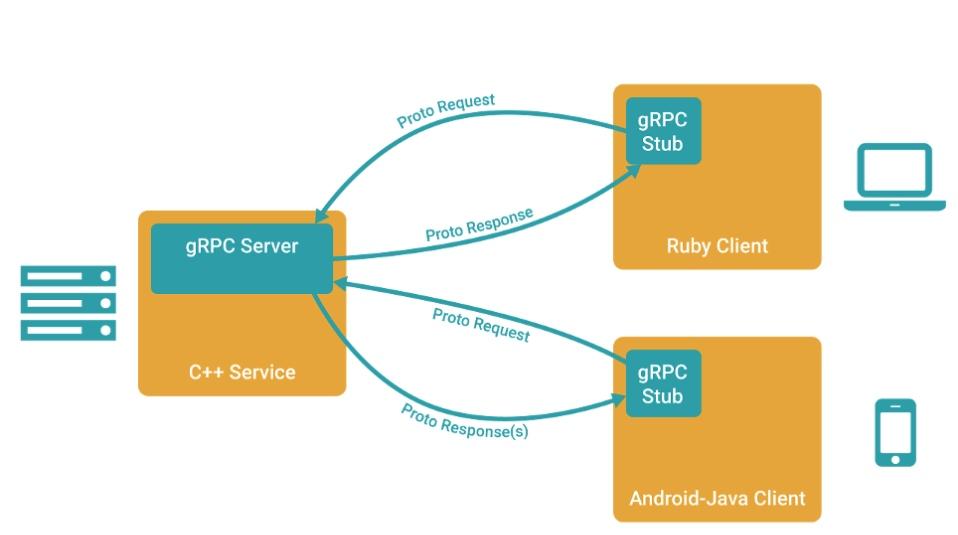
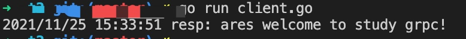

GRPC学习及实践
RPC
RPC 代指远程过程调用（Remote Procedure Call），它的调用包含了传输协议和编码（对象序列号）协议等等。允许运行于一台计算机的程序调用另一台计算机的子程序，而开发人员无需额外地为这个交互作用编程。 RPC具有简单、通用、安全、效率的特点，可以基于 HTTP 协议进行调用。
GRPC相关安装
安装GRPC
1、go get方式
$ go get -u google.golang.org/grpc
2、通过github 进入$GOTPATH目录，新建google.golang.org目录，拉取golang在github上的镜像库：
$ cd /usr/local/go/path/src
$ mkdir google.golang.org
$ cd google.golang.org/
$ git clone https://github.com/grpc/grpc-go
$ mv grpc-go/ grpc/
Protoc Plugin编译器插件安装
$ go get -u github.com/golang/protobuf/protoc-gen-go
将Protoc Plugin的可执行文件从 GOPATH中移动到𝐺𝑂𝑃𝐴𝑇𝐻中移动到GOBIN 下
$ which protoc-gen-go
/usr/local/bin/protoc-gen-go
Protocol Buffers v3安装
$ wget https://github.com/google/protobuf/releases/download/v3.5.1/protobuf-all-3.5.1.zip
$ unzip protobuf-all-3.5.1.zip
$ cd protobuf-3.5.1/
$ ./configure
$ make
$ make install
$ protoc --version
libprotoc 3.5.1
Protobuf介绍
简单介绍：protobuf是协议，protoc是IDL生成器。 Protocol Buffers 是一种与语言、平台无关，可扩展的序列化结构化数据的方法，常用于通信协议，数据存储等等。
语法
syntax = "proto3";
package proto;
service SearchService {
rpc Search(SearchRequest) returns (SearchResponse) {}
}
option go_package ="./proto"; // 指定RPC文件生成路径地址
message SearchRequest {
string request = 1;
}
message SearchResponse {
string response = 1;
}
- 第一行声明使用 proto3 语法。如果不声明，将默认使用 proto2 语法。
- 定义 SearchService RPC 服务，其包含 RPC 方法 Search，入参为 SearchRequest 消息，出参为 SearchResponse 消息
- 定义 SearchRequest、SearchResponse 消息，示例定义了一个字段，包含三个属性：类型、字段名称、字段编号
- Protobuf 编译器会根据选择的语言不同，生成相应语言的 Service Interface Code 和 Stubs
V2,V3区别
- 删除原始值字段的字段存在逻辑
- 删除 required 字段
- 删除 optional 字段，默认就是
- 删除 default 字段
- 删除扩展特性，新增 Any 类型来替代它
- 删除 unknown 字段的支持
- 新增 JSON Mapping
- 新增 Map 类型的支持
- 修复 enum 的 unknown 类型
- repeated 默认使用 packed 编码
- 引入了新的语言实现（C＃，JavaScript，Ruby，Objective-C）
protoc使用
常用参数-IPATH, –proto_path=PATH：指定import搜索的目录，可指定多个，如果不指定则默认当前工作目录；–go_out：生成golang源文件 示例：
$ protoc --go_out=plugins=grpc:. *.proto
将plugins=grpc参数传递给–go_out,protoc-gen-go可以生成与grpc相兼容的代码
GRPC
简单来讲 gRPC 是一个 基于 HTTP/2 协议设计的 RPC 框架，它采用了 Protobuf 作为 IDL，具有以下特性：
- 强大的IDL，使用Protocol Buffers作为数据交换的格式，支持v2、v3（推荐v3）
- 跨语言、跨平台，也就是Grpc支持多种平台和语言
- 支持HTTP2，双向传输、多路复用、认证等
gRPC vs. Restful API
gRPC和restful API都提供了一套通信机制，用于server/client模型通信，而且它们都使用http作为底层的传输协议(严格地说, gRPC使用的http2.0，而restful api则不一定)。不过gRPC还是有些特有的优势，如下：
- gRPC可以通过protobuf来定义接口，从而可以有更加严格的接口约束条件
- 通过protobuf可以将数据序列化为二进制编码，这会大幅减少需要传输的数据量，从而大幅提高性能
- gRPC可以方便地支持流式通信
GRPC流程图

1.图中服务端使用的是C++语言开发的系统,客户端分别使用的是Android-Java开发的平台和Ruby语言开发的平台.gRPC可以在不同的语言开发的平台上使用. 2.主要实现的流程为,在服务端实现自身定义的服务内的接口，并运行一个 gRPC 服务器来处理客户端的请求调用并将处理结果返回到客户端。在客户端拥有一个存根能够像服务端一样的方法。
GRPC示例
目录结构
$ tree
.
├── client.go
├── proto
│ ├── search.pb.go
│ └── search.proto
└── server.go
1 directory, 4 files
IDL
编写search.proto：
syntax = "proto3";
package proto;
service SearchService {
rpc Search(SearchRequest) returns (SearchResponse) {}
}
option go_package ="./proto"; // 指定RPC文件生成路径地址
message SearchRequest {
string request = 1;
}
message SearchResponse {
string response = 1;
}
在 proto 文件夹下执行如下命令生成go文件：
$ protoc --go_out=plugins=grpc:. *.proto
执行完之后会生成search.pb.go。
server
package main
import (
"context"
"log"
"net"
"google.golang.org/grpc"
pb "../t2/proto"
)
type SearchService struct{}
func (s *SearchService) Search(ctx context.Context, r *pb.SearchRequest) (*pb.SearchResponse, error) {
return &pb.SearchResponse{Response: r.GetRequest() + " welcome to study grpc!"}, nil
}
const PORT = "9001"
func main() {
server := grpc.NewServer()
pb.RegisterSearchServiceServer(server, &SearchService{})
lis, err := net.Listen("tcp", ":"+PORT)
if err != nil {
log.Fatalf("net.Listen err: %v", err)
}
server.Serve(lis)
}
- 创建 gRPC Server 对象
- 将 SearchService（其包含需要被调用的服务端接口）注册到 gRPC Server 的内部注册中心。这样可以在接受到请求时，通过内部的服务发现，发现该服务端接口并转接进行逻辑处理
- 创建 Listen，监听 TCP 端口
- gRPC Server 开始 lis.Accept，直到 Stop 或 GracefulStop
client
package main
import (
"context"
"log"
"google.golang.org/grpc"
pb "../t2/proto"
)
const PORT = "9001"
func main() {
conn, err := grpc.Dial(":"+PORT, grpc.WithInsecure())
if err != nil {
log.Fatalf("grpc.Dial err: %v", err)
}
defer conn.Close()
client := pb.NewSearchServiceClient(conn)
resp, err := client.Search(context.Background(), &pb.SearchRequest{
Request: "ares",
})
if err != nil {
log.Fatalf("client.Search err: %v", err)
}
log.Printf("resp: %s", resp.GetResponse())
}
- 创建与服务端的连接交互
- 创建 SearchService 的客户端对象
- 发送 RPC 请求，等待同步响应，得到回调后返回响应结果
- 输出响应结果
运行server及client
 至此，一个简单的GRPC示例已经跑起来了。